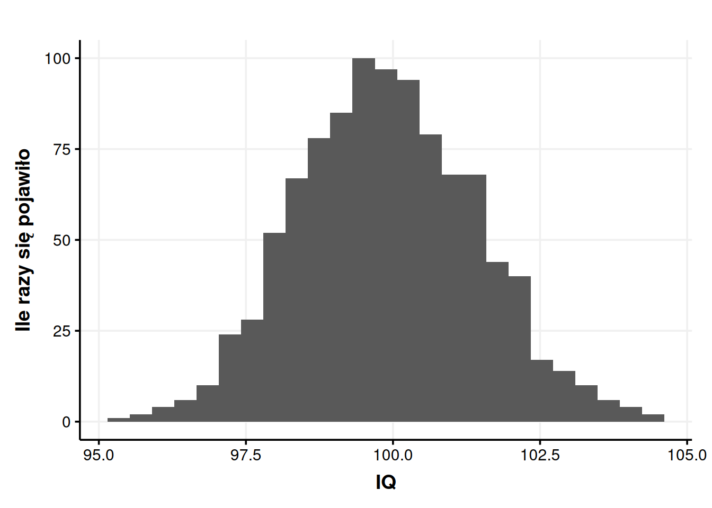
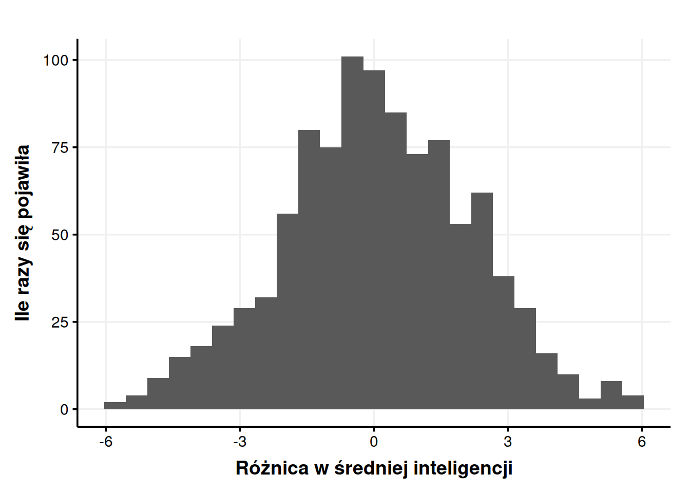
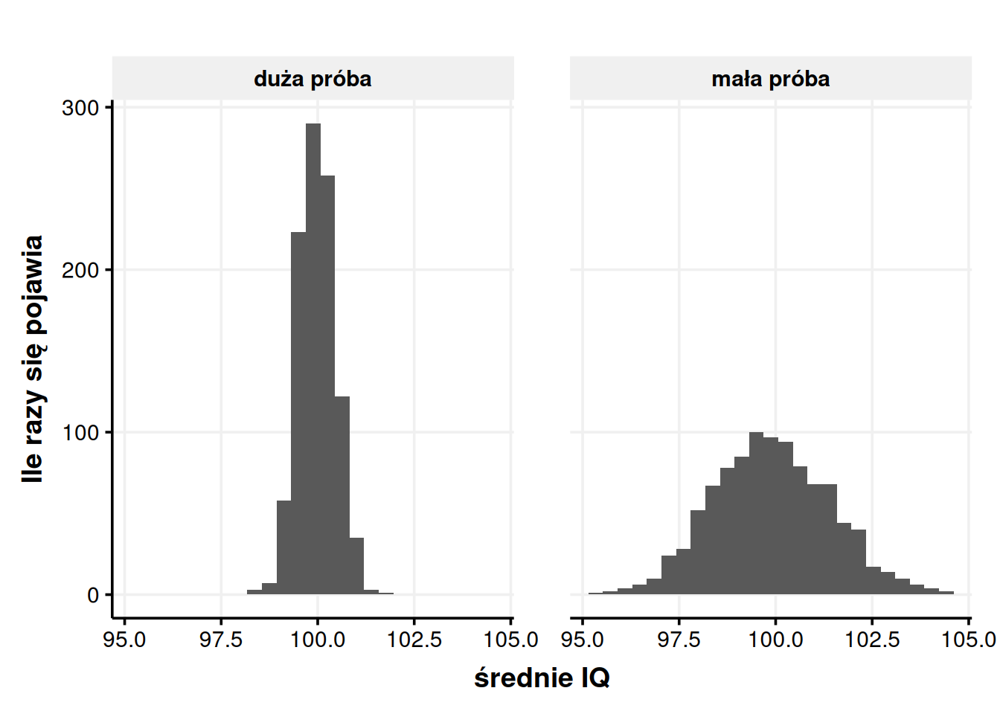

| lp | IQ |
|---|---|
| 1 | 98.77 |
| 2 | 99.78 |
| 3 | 97.06 |
| 4 | 103.18 |
| 5 | 101.92 |
| 6 | 99.63 |
| 7 | 98.33 |
| 8 | 100.49 |
| 9 | 99.89 |
| 10 | 98.66 |
Testy statystyczne i wartość p
Statystyka
Czymże jest prawda? Czy czegokolwiek możemy być pewni? Nie lubimy się pakować w takie pytania, bo łatwo dojść do odpowiedzi „nie”, a wtedy tracimy grunt pod nogami. Część z nas zgodzi się, że tak naprawdę niczego nie możemy być pewni. W końcu zawsze może się okazać, że żyjemy w Matrixie, a wtedy żadne dowody nie mają znaczenia. Ale jednak pewnych rzeczy jesteśmy bardziej pewni niż innych.
Dla przykładu – wychodzę z mieszkania i zamykam drzwi na klucz. Zrobiłem to odruchowo, nieuważnie, więc po chwili nie wiem już, czy zamknąłem te drzwi, czy nie. Wzbiera we mnie lęk, więc cofam się i sprawdzam. Uff, zamknąłem. W tej chwili uzyskuję chwilową pewność1, że drzwi są zamknięte i spokojnie wychodzę z budynku. Wspomnienie zaciera się nieco, więc moja pewność spada ze 100% do 96%. Jednak taki poziom pewności w zupełności wystarczy, żebym na pytanie „Zamknąłeś drzwi?” odpowiedział „Tak”.
Jeśli jednak cierpiałbym na zaburzenie obsesyjno-kompulsywne (OCD), 96% pewności mogłoby się okazać stanowczo za dużym ryzykiem. Mógłbym wracać do tych drzwi kilkanaście razy, za każdym razem sprawdzając, czy na pewno są zamknięte. Każda pewność niższa niż 100% byłaby dla mnie trudna do zaakceptowania. Nawet 0,5% szans, że stanie się coś złego, mógłbym uważać za bardzo, bardzo dużo. Jednak takie zachowania i zniekształcenia poznawcze uznajemy za objaw psychopatologii (Butcher & Hooley, 2018). W świecie rzeczywistym musimy akceptować jakąś niepewność, jakąś szansę na pomyłkę. W przypadku zamykania drzwi robimy to na oko. W nauce, gdzie prawdopodobieństwo określamy liczbowo, możemy przyjąć konkretną granicę.
1 Problemy z próbkowaniem
Wyobraźmy sobie, że słyszymy w telewizji wypowiedź pewnego polityka, który twierdzi, że kobiety są mniej inteligentne od mężczyzn. Do tego wyobraźmy sobie, że jesteśmy psychologami, więc mamy uprawnienia do badania inteligencji. Sceptyczni, postanawiamy naukowo sprawdzić, czy chłopski rozum naszego polityka może mieć trochę racji. Docieramy do 100 kobiet i 100 mężczyzn, każdej z osób badanych przeprowadzamy rzetelny i trafny test inteligencji WAIS-R, liczymy średnie i jesteśmy w szoku. Na skali IQ, średnia inteligencja kobiet wyniosła 99, a średnia inteligencja mężczyzn 101. Ogarnia nas zdziwienie. Czy polityk miał rację? Czy musimy się teraz pokajać i w geście hołdu zaśpiewać razem Yellow Submarine? Niekoniecznie.
Nie ufamy swoim wnioskom, więc postanawiamy powtórzyć badanie. Ponownie pobieramy próbkę 100 kobiet i 100 mężczyzn, ponownie wykonujemy WAIS-R i ponownie liczymy średnie. Ciekawe. Tym razem średnia dla kobiet wyniosła 101, a dla mężczyzn… 98. Nie dość, że różnica wzrosła, to jeszcze się odwróciła. Ale jak to? Losowaliśmy z tej samej populacji. Dlaczego nagle średnia inteligencja w naszych próbkach jest inna?
Ten przykład stał się nierealny, gdy od niechcenia samodzielnie przeprowadziliśmy WAIS-R 200 osobom. Popuśćmy wodze fantazji jeszcze luźniej. Wyobraźmy sobie, że jesteśmy szalonym dyktatorem dużego państwa i mamy nieograniczone zasoby. Zaskoczeni naszymi wynikami, chcemy sprawdzić, czy kolejne średnie też będą się od siebie różniły. Badamy więc 1000 próbek po 100 osób każda. Mamy na swoim komputerze 1000 średnich, które przeglądamy. Kilka spośród nich pokazałem w tabeli 1.
Zaczynamy zauważać, że wyniki za każdym razem były trochę inne, ale zawsze lądowały w pobliżu 100. Innymi słowy średnie bliskie 100 pojawiały się często, a średnie dalekie od 100 pojawiały się rzadko. Nie mamy na przykład ani jednego wyniku mniejszego niż 95, a w zakresie 99-101 mieści się 47% wszystkich uzyskanych średnich. Możemy zrobić nawet wykres, jak często pojawiały się jakie średnie.

Wpadamy więc na pomysł – skoro średnie koncentrują się dookoła wyniku 100, to może prawdziwa średnia inteligencja w populacji wynosi właśnie 100? To jest bardzo rozsądne założenie. Zwłaszcza, że jeśli policzymy jedną, zbiorczą średnią dla 100 000 naszych badanych, to rzeczywiście wychodzi 100.
Dobieranie próby, wielkości tej próby i generalizowanie wniosków z prób na całe populacje to temat na całą inną rozmowę. Nie będziemy się teraz w to zagłębiać. Dla nas ważny jest taki problem – skąd mamy wiedzieć, czy różnica w IQ, która wychodzi nam w naszym badaniu, rzeczywiście istnieje? Może wyszła nam tylko przez przypadek? Czy cała nauka to kłamstwo, bo nigdy nie możemy mieć pewności? Czy nie powinniśmy odrzucić akademickich dywagacji i podążać za chłopskim rozumem? Wstrzymajmy panikę. To da się rozwiązać.
2 Jak łatwo wychodzą przypadkowe różnice?
I teraz robi się ciekawie. To jest skomplikowane, warto tutaj zwolnić. Jeśli to się zrozumie, to zrozumie się całą wielką logikę testów statystycznych. Spróbujmy więc nieco się zagłębić. Jesteśmy w końcu w pięknej, abstrakcyjnej sytuacji, gdzie mamy do swojej dyspozycji 1000 średnich z różnych próbek. Na rysunku 1. widzimy, że większość naszych średnich mieści się mniej więcej w granicach 98-102. Uzyskać przez przypadek średnią 105 byłoby bardzo trudno. Uzyskać średnią 115 jest praktycznie niemożliwe. Ale już średnią 101 przez przypadek uzyskać jest bardzo łatwo.
Możemy to ugryźć od innej strony. Jestem w końcu szalonym, bogatym dyktatorem dużego państwa, więc znowu robię olbrzymie badania i powtarzam nasz pierwotny eksperyment 1000 razy. Czyli losuję 1000 próbek po 100 mężczyzn, 1000 próbek po 100 kobiet, mierzę inteligencję i liczę różnicę. Efektem jest zbiór danych, którego fragment znajdziemy w tabeli 2.
| lp | IQ kobiet | IQ mężczyzn | różnica |
|---|---|---|---|
| 1 | 100.49 | 98.83 | 1.66 |
| 2 | 97.89 | 99.14 | -1.25 |
| 3 | 99.89 | 101.26 | -1.37 |
| 4 | 99.87 | 100.14 | -0.27 |
| 5 | 102.91 | 98.65 | 4.26 |
| 6 | 101.43 | 101.82 | -0.39 |
| 7 | 103.46 | 101.24 | 2.22 |
| 8 | 100.30 | 101.45 | -1.15 |
| 9 | 99.98 | 99.17 | 0.81 |
| 10 | 99.00 | 100.54 | -1.54 |
Podstawą do różnicy była tu średnia inteligencja kobiet, więc ujemna różnica oznacza, że mężczyźni okazali się mniej inteligentni, zaś dodatnia, że bardziej. Tak jak w przypadku tabeli 1., niektóre różnice są większe, niektóre mniejsze, ale ich rozkład nie jest przypadkowy. Wrzućmy nasze różnice na wykres.

Jak widzimy, różnice oscylują wokół zera. Skoro w większości eksperymentów różnica wyniosła zero albo prawie zero, to najprawdopodobniej to jest właśnie odpowiedź – prawdziwa różnica wynosi właśnie zero! Ale pomimo tego łatwo jest losowo uzyskać różnicę rzędu 1 punktu. Trudniej jest uzyskać różnicę rzędu 5 punktów. Przypadkowa różnica rzędu 10 punktów jest prawie niemożliwa do uzyskania.
To jest absolutnie kluczowe. Gdy nie ma różnic w populacjach, różnice między poszczególnymi próbkami i tak się zdarzają. Małe różnice w próbkach są łatwe do uzyskania, a duże różnice są mniej prawdopodobne. Możemy określić dokładnie, jak łatwo uzyskać jest jaką różnicę. Na przykład – jak często pojawiła się w naszym zbiorze różnica 5 lub więcej punktów (na plusie albo na minusie)? Mogę to policzyć – w 1000 próbkach różnica 5 albo większa pojawiła się 19 razy, co daje 1,9% szans. A jak często pojawiła się różnica co najmniej 2 punktów? W 343 przypadkach na 1000, czyli 34,3% szans.
3 Istotność statystyczna
Powtarzając nasze badanie 1000 razy, byliśmy w stanie ustalić, że różnicy w inteligencji tak naprawdę nie ma. Zyskaliśmy też możliwość policzenia, jak łatwo uzyskać daną różnicę przez przypadek, mimo że tak naprawdę różnic nie ma. Ale czy naprawdę musimy powtarzać nasz eksperyment 1000 razy, żeby zyskać taką pewność? Ronald Fisher wymyślił sposób, który ułatwia nam całą sprawę i pozwala dochodzić do podobnych wniosków na podstawie pojedynczych próbek.
Fisher daje nam taką propozycję – najpierw udajmy, że różnicy tak naprawdę nie ma. Przyjmijmy za fakt to, co trochę wyżej wywołało u nas kryzys wiary w naukę, czyli że jakakolwiek różnica, która między próbkami powstała, powstała w wyniku przypadku. Ot, bo średnie z próbek nie oddają dokładnie średniej z całej populacji i majtają się losowo dookoła prawdziwej średniej2. Taką hipotezę nazywamy hipotezą zerową. Hipoteza zerowa zawsze mówi, że tak naprawdę różnic nie ma, a jeśli jakieś wykryliśmy, to powstały one przez przypadek3.
Wyobrażamy sobie więc, że różnic między populacjami kobiet i mężczyzn w zakresie inteligencji nie ma. Przypomnijmy, że w pierwszym rzucie naszych badań kobiety miały średnią inteligencję równą 99, a mężczyźni 101. Różnica wyniosła więc 2 punkty. Z Badań Szalonego Dyktatora™ wiemy, że uzyskanie tak małej różnicy przez przypadek jest całkiem prawdopodobne, ale zakładamy, że dostępu do tamtych danych nie mamy.
Wiemy, że kiedy różnic tak naprawdę nie ma, to łatwo uzyskuje się małe różnice, ale uzyskanie dużej różnicy staje się naprawdę trudne. Możemy pójść więc taką logiką – jeśli 2 punkty to duża różnica, to to nie mógł być przypadek, że ją uzyskaliśmy. Z tego, że jest duża, możemy wnioskować, że istnieje naprawdę, a nie wynika z losowego majtania się średnich w próbkach dookoła prawdziwej średniej. Jeśli zaś różnica 2 punktów jest mała, no to równie dobrze mogła nam się trafić przez przypadek.
Lecz czy da się sprawdzić, czy dana różnica jest duża, czy mała? Bo przecież to nie może być po prostu umowne. Duże różnice to takie, które przez przypadek zdarzają się rzadko, a małe różnice to takie, które zdarzają się często. Ale czy bez pomocy państwowego aparatu opresji możemy zrobić to, co robiliśmy na koniec poprzedniego podrozdziału, czyli policzyć dokładne szanse na uzyskanie danej różnicy przez przypadek? Możesz pewnie teraz powtórzyć za Tadeuszem Sznukiem „nie wiem, ale się domyślam”.
Oczywiście sposób na to istnieje. Ten sposób nazywamy testem t-Studenta4. Należy on do szerokiej grupy podobnych sposobów na różne problemy, nazywających się ogólnie testami statystycznymi. Co najlepsze, nie będziemy wgłębiać się teraz w to, jak konkretnie ten test działa z punktu widzenia matematyki. Nie jest nam to potrzebne do zrozumienia jego logiki. A logika jest następująca:
Załóż, że różnic tak naprawdę nie ma (hipoteza zerowa jest prawdziwa).
Policz, jak prawdopodobne jest uzyskanie takiej różnicy, jaka wyszła5.
Ponieważ założyliśmy, że różnic tak naprawdę nie ma, to różnica, która wyszła, musiała nam wyjść przez przypadek. Innymi słowy my chwilowo zakładamy, że to rzeczywiście był przypadek. Wtedy, korzystając ze wzoru testu t-Studenta, sprawdzamy, jaka była szansa, żeby ten przypadek miał miejsce. Jeśli szansa na to była bardzo mała, dochodzimy do wniosku, że to może jednak nie stało się przypadkiem. Mówiąc językiem naukowym – odrzucamy hipotezę zerową. Zerowa mówiła, że to wszystko wyszło przez przypadek, Ty jej odpowiadasz, że takie różnice nie dzieją się przez przypadek, że prawdopodobieństwo jest za niskie. Odrzucona hipoteza zerowa zaczyna płakać i upokorzona ucieka. Gorzej, jeśli szansa na przypadek jest duża. Wtedy nie możemy hipotezy zerowej odrzucić. Ciężko jest ją też przyjąć, ale o tym później.
Nie wgłębiając się za bardzo w to, jak nasz test to robi, wrzucamy do niego nasze dane. Program statystyczny wypluwa nam wtedy coś w tym rodzaju:
Welch Two Sample t-test
data: women and men
t = -0.94536, df = 195.91, p-value = 0.3456
alternative hypothesis: true difference in means is not equal to 0
95 percent confidence interval:
-6.172271 2.172271
sample estimates:
mean of x mean of y
99 101 Najważniejsza dla nas wartość określona jest literką \(p\) (p-value). Ta wartość znaczy to, nad czym tak bardzo się rozwodziłem we wcześniejszych akapitach – jak łatwo byłoby uzyskać otrzymać różnicę 2 punktów przez przypadek, gdyby różnic tak naprawdę nie było? W naszym wypadku odpowiedzią jest, że taką różnicę uzyskamy w 34,6% losowych próbek. Badania Szalonego Dyktatora™ pokazały wartość 34,3%, także widzimy, że test t-Studenta ma naprawdę dobrą skuteczność. Z jednego powtórzenia wyczytał to, do czego szalony dyktator potrzebował tysiąca powtórzeń. Teraz pojawia się pytanie – czy to wystarczająco mała szansa, żeby stwierdzić, że to nie przypadek? Żeby odrzucić hipotezę zerową?
Na oko moglibyśmy powiedzieć, że nie. Jeśli naprawdę nie byłoby różnic, to różnicę rzędu 2 punktów albo więcej i tak dostawalibyśmy w mniej więcej co trzeciej próbce. Tak po prostu losowo. Ale jeśli \(p\) wyszłoby nam 0,000001%, to raczej nie mielibyśmy wątpliwości, że to nie mógł być przypadek i różnica istnieje naprawdę. Ale co gdy \(p = 8\%\)? Albo \(p = 4\%\)? Być może dobrze by było, gdybyśmy zaczęli się zastanawiać, jak duże ryzyko błędu możemy ponieść i podejmowali tę decyzję osobno w każdym przypadku. A może powodowałoby to tylko chaos i trudności w dojściu do porozumienia, bo dla każdego naukowca duża i mała szansa znaczyłyby co innego.
Tak czy inaczej musimy ustalić gdzieś punkt odcięcia. Jak małe prawdopodobieństwo jest wystarczająco małe, żeby uznać, że to nie mógł być przypadek? Taką wartość odcięcia oznaczamy \(\alpha\) i w większości nauk przyjęty zwyczaj mówi, że \(\alpha = 0,05\). Jeśli szansa na przypadek wynosi mniej niż 5%, to uznajemy, że to nie był przypadek. Warto zaznaczyć, że taka granica jest całkiem arbitralna. Jak każda granica, wywołuje pytania w stylu „Czyli jak szansa na przypadek wynosi 4,9%, to nie wierzę, że to przypadek, ale jak wynosi już 5,1%, to nie mogę być taki pewny?“. Odpowiedź brzmi „tak”. Mimo że na zdrowy rozum to nie ma sensu, to bycie blisko granicy rzeczywiście wywołuje duże emocje i część naukowców skłania do podejrzanych praktyk, żeby tylko zbić \(p\) poniżej magicznego 0,056.
Gdy prawdopodobieństwo uzyskania danej różnicy w sytuacji braku rzeczywistych różnic jest mniejsze niż 5%7, mówimy o takiej różnicy, że jest istotna statystycznie i odrzucamy hipotezę zerową (czyt. to nie mógł być przypadek). W naszym przykładzie \(p = 0,346\), a więc nie możemy odrzucić hipotezy zerowej (\(0,346 > 0,005\)). Prawdopodobieństwo przypadku jest stanowczo za wysokie.
Co jest jednak ważne, wartość \(\alpha = 0,05\) ciągle dopuszcza 5% szans na błąd. Jeśli zrobilibyśmy 100 badań, to ok. 5 z nich dałoby nam złudzenie, że różnica jest prawdziwa, mimo że tak naprawdę nie jest. W Badaniach Szalonego Dyktatora™ w 1000 powtórzeń uzyskaliśmy dużą różnicę 47 razy (właśnie ok. 5%). Jakieś ryzyko błędu zawsze jest, pytanie brzmi tylko, jak duże ryzyko jesteśmy w stanie zaakceptować. Daryl Bem (2011) opublikował kiedyś podsumowanie swoich badań, 9 eksperymentów z których 8 udowadniało, że ludzie potrafią przewidywać przyszłość. Jak się potem okazało, w ciągu 10 lat swoich badań wykonał on znacznie więcej niż te 9 eksperymentów, ale opublikował tylko te, które wyszły (Engber, 2017). Można więc zapytać, dlaczego wyszły? A odpowiedź może brzmieć – przypadkiem. Bo wartość \(\alpha\) zawsze jest trochę większa, niż zero.
Pytaniem filozoficznym jest, czy w takim razie mamy hipotezę zerową przyjąć? To nie jest takie proste, bo brakuje nam jednego jeszcze czynnika – wielkości próby. Zanim jednak omówimy wielkość próby, weźmiemy to, co powiedzieliśmy o teście t-Studenta i zobaczymy, jak to ma się do całej reszty testów statystycznych.
4 Logika testów statystycznych
Testów statystycznych jest od groma. Chciałbym móc powiedzieć, że każdy sprawdza co innego, ale niestety często wiele testów służy do dokładnie tego samego, a ich autorzy przekrzykują się w tym, który test jest mocniejszy, lepszy, bardziej odporny, lepiej pachnie itd. Zdobycie pewnej orientacji w tym gąszczu wymaga czasu i doświadczenia. Dzisiaj wiem, że różnice w średnich sprawdzam testem t-Studenta, a normalność rozkładu np. testem Shapiro-Wilka, ale nie wiedziałem tego, jak zaczynałem dopiero zaczynałem się uczyć.
Mimo całego bogactwa testów statystycznych, każdy z nich idzie bardzo podobną logiką, opierającą się na dwóch hipotezach – zerowej (\(H_0\)) i alternatywnej (\(H_1\)). Zerową już poznaliśmy (i skrzywdziliśmy). Hipoteza alternatywna to jej dokładne przeciwieństwo. Jeśli zerowa mówi, że nie ma różnic, to alternatywna na przekór twierdzi, że różnice są. Każdy test statystyczny ma takie dwie hipotezy. Wiedzieć, co robi dany test, to znaczy znać jego hipotezy. Przykładowo dla testu t-Studenta hipotezy brzmią tak:
\(H_0\): Prawdziwa różnica między średnimi wynosi 0.
\(H_1\): Prawdziwa różnica między średnimi jest różna od 0.
Dla testu Shapiro-Wilka hipotezy brzmią tak:
\(H_0\): Rozkład zmiennej nie różni się od normalnego8.
\(H_1\): Rozkład zmiennej różni się od normalnego.
Hipoteza alternatywna może być niekierunkowa (np. kobiety i mężczyźni różnią się inteligencją) lub kierunkowa (np. kobiety są inteligentniejsze od mężczyzn). W tym miejscu tylko to sygnalizuję, ale to ma potem znaczenie np. przy testowaniu, czy średnie się różnią (tzw. testy jedno- lub dwustronne).
Każdy test statystyczny wyrzuca nam na koniec wartość \(p\). Ta wartość zawsze znaczy to samo – jeśli hipoteza zerowa byłaby prawdziwa, to jak trudno by było uzyskać dane, które uzyskaliśmy? Jeśli byłoby trudno, jeśli szansa na to wynosi mniej niż 5%, to odrzucamy hipotezę zerową. Przy teście t-Studenta oznacza to, że stwierdzamy, że różnica w średnich istnieje naprawdę, a nie jest tylko artefaktem w naszych próbkach. W teście Shapiro-Wilka odrzucenie hipotezy zerowej oznacza, że stwierdzamy, że rozkład różni się od normalnego. Na przykład jest paranormalny i straszy.
Ciekawe jest to, że o ile przy większości testów chcemy odrzucić hipotezę zerową, tak nie zawsze jest to prawdą. Nie chodzi mi o sytuację, w której po prostu chcemy, żeby się okazało, że kobiety i mężczyźni nie różnią się inteligencją. Czasem po prostu potrzebujemy, żeby hipoteza zerowa była prawdziwa. Dla przykładu z pewnych matematycznych przyczyn lubimy, jak dane nam się rozkładają normalnie. Dlatego jeśli test Shapiro-Wilka daje istotny statystycznie wynik, to zaklinamy pod nosem, bo to znaczy, że nasz rozkład istotnie różni się od normalnego9. Logika jest ta sama – \(p < 0,05\) oznacza odrzucenie hipotezy zerowej, tylko w przypadku tego testu, odrzucanie hipotezy zerowej jest nam nie na rękę.
Jeśli rozumie się tę ogólną logikę testów statystycznych, zna się hipotezę zerową danego testu, potrafi się wykorzystać wartość \(p\) do jej odrzucenia bądź nieodrzucania oraz potrafi się zinterpretować, co to odrzucenie znaczy w konkretnym teście, to spokojnie można iść w świat. Najtrudniejsze już za nami. Pierwszy kamień milowy właściwie mamy osiągnięty. Zanim jednak otworzymy szampana, warto się jeszcze zorientować, jak na \(p\) można wpływać, kiedy badanie nam nie wychodzi i jak ma się istotność statystyczna do wielkości efektu.
5 Wielkość próbki
Z może nieco przydługich rozważań powyżej wyłonił nam się jasny obraz – duże różnice możemy wykryć, a małe nie, bo jak różnica jest mała, to zawsze jest ryzyko, że powstała przypadkiem. Ale na wielkość różnicy nie możemy wpływać. Ona jest jaka jest. A co jeśli się uprę i będę chciał wykryć małą różnicę? Czy jest coś, na co mogę wpłynąć, a co pozwoli mi wykrywać nawet te mniejsze różnice tak, żeby były istotne statystycznie? Owszem. Spoilerem był tytuł podrozdziału, ale można wykrywać mniejsze różnice, gdy zbierze się większą próbę.
Zobaczmy to na przykładzie. Pokazywałem wcześniej (na rysunku 1) wyniki symulacji, gdzie braliśmy 100 osób, liczyliśmy ich średnią inteligencję. Powtórzyliśmy to 1000 razy i patrzyliśmy, jak często pojawiają się dane średnie. Teraz zrobimy to samo, ale każda pojedyncza próbka będzie składała się z 1000 osób.

Na rysunku 3 widzimy, co się dzieje, kiedy liczebność próby zwiększa się. Kiedy próba była mała, wyniki koncentrowały się wokół prawdziwej średniej, czyli wartości 100, ale miały całkiem spory rozstrzał – ok. 95-105. Większość wyników plasowała się wtedy w zakresie10 od 98,5 do 101,5. Gdy próbka była duża, wyniki ciągle koncentrowały się wokół 100, ale były znacznie mniej rozproszone. Całkowity rozstęp to ok. 98-102, a większość wyników mieści się w zakresie 99,5-100,5.
Ma to sens, jak się dłużej zastanowić. Na czuja da się stwierdzić, że średnia z 1000 osób będzie bardziej adekwatna, niż średnia ze 100 osób. A „bardziej adekwatna” oznacza w tym wypadku „bliższa prawdziwej średniej całej populacji” czyli „bliżej 100”. Dlatego właśnie ten rozkład jest bardziej zbity – bo każda pojedyncza średnia, która go buduje, jest bardziej adekwatna.
Można powiedzieć – no tak, ale co to zmienia? Zmienia to tyle, że teraz co innego jest małą, a co innego dużą różnicą. Przy małych próbach wyniki oddalone o 1 lub więcej punktów od prawdziwej średniej zdarzały się dość często, bo w 53,3% przypadków. W takim razie można powiedzieć, że 1 punkt oddalenia to dość mało, często się zdarza przez przypadek. Ale jak próba jest duża, to takie samo oddalenie możemy już uznać za duże, bo pojawiło się tylko w 3,4% przypadków.
Przekładając to na logikę wartości \(p\) – różnice, które bardzo łatwo uzyskać w małych próbach, nagle stają się trudne do uzyskania, gdy próba jest duża. Jeśli zbadaliśmy po 100 kobiet i mężczyzn i wyszła nam różnica 2 punktów IQ, to nie zrobi to na nas większego wrażenia, bo taka różnica może być przypadkowa. Ale jeśli różnica 2 punkty wychodzi przy próbce po 1000 osób, to wtedy mamy już więcej zaufania, że ta różnica istnieje naprawdę.
Jako ciekawostkę mogę jeszcze dorzucić, że jeśli spodziewamy się, jak duży będzie nasz efekt (np. dlatego, że przeczytaliśmy dużo na ten temat i mamy już mniej więcej wyczucie, czego się spodziewać), to możemy oszacować, ile osób musimy zbadać, żeby efekt o takiej wielkości wykryć. Im mniejszy jest efekt do wykrycia, tym więcej ludzi trzeba zbadać, żeby okazał się istotny statystycznie. Nazywamy to analizą mocy i możemy wykonać w darmowym programie G*Power lub za pomocą pakietu pwr w R.
5.1 Dlaczego większe próbki pozwalają wykryć mniejsze efekty?
Ta część jest zupełnie nieobowiązkowa. Spokojnie da się dobrze rozumieć testy statystyczne po prostu wiedząc, że większe próbki pozwalają wykryć mniejsze efekty, bez wchodzenia w szczegóły dlaczego tak się dzieje. Ale poświęcę chwilę, żeby to drugie też wyjaśnić. Kilka kolejnych akapitów będzie też bardziej techniczne i można spokojnie je pominąć i przejść do podrozdziału o wielkości efektu.
Pod rysunkiem 3. pisałem o tym, że większość wyników mieści się w jakimśtam zakresie dookoła średniej. Ten zakres, w którym zawiera się większość wyników, nazywamy odchyleniem standardowym i więcej na jego temat piszę w tym wpisie.
Bardzo szczególne jest odchylenie standardowe rozkładów takich, jak te z rysunku 3. Przypomnijmy, co to są za rozkłady. Pokazują one, jak często możemy wylosować jaką średnią. Środkiem tego rozkładu jest prawdziwa średnia całej populacji, a średnie dookoła to losowe odchylenia od tej prawdziwej średniej. Takie rozkłady nazywamy rozkładami próbkowania i niosą one bardzo ważną informację – jakie różnice są duże, a jakie są małe. Odchylenia standardowe takich rozkładów nazywamy błędem standardowym. Błąd standardowy mówi nam, jakie średnie będą nam często wychodzić przez przypadek, a jakie rzadko.
Jeśli wartości są w obrębie ok. 2 błędów standardowych, czyli tam, gdzie 95% wszystkich wyników, to uznajemy, że różnice są w sumie małe, nieistotne statystycznie. To, że to są 2 odchylenia standardowe11 to konkret, którego nie mówiłem wcześniej, ale który wynika z faktu, że przyjmujemy \(\alpha = 0,05\) (por. podrozdział Istotność statystyczna). Innymi słowy wyniki oddalone o mniej niż 2 odchylenia standardowe uzyskać jest łatwo (więcej niż 5% szans), a wyniki oddalone o więcej niż 2 odchylenia standardowe uzyskać jest trudno (mniej niż 5% szans).
Żeby przerobić to na konkretnym przykładzie, zerknijmy jeszcze raz na rozkłady z rysunku 3. Odchylenie standardowe rozkładu z małymi próbkami wynosi12 ok. 1,5, zaś średnia wynosi 100. Oznacza to, że często (w ok. 95% przypadków) będą nam się losowały średnie z zakresu 97-103. Jeśli jakaś grupa, np. członkowie Mensy, będzie miała średnią spoza tego zakresu, to da nam dowód na to, że średnia inteligencja tej grupy naprawdę jest inna niż średnia ogółu społeczeństwa. Odchylenie standardowe rozkładu z większymi próbami jest mniejsze, bo wynosi zaledwie ok. 0,5 (widać na rysunku, że rozkład jest węższy, więc trzeba węższych widełek, żeby objąć większość wyników). Oznacza to, że spodziewamy się wyników w zakresie 99-101 punktów IQ, a wyniki spoza tego zakresu uznajemy za nieprzypadkowe. Średni wynik 102 łatwo jest uzyskać, kiedy zbadamy tylko 100 osób, ale trudno, kiedy zbadamy ich 1000.
Widzimy więc, że im większa próbka, tym błąd standardowy mniejszy. Przypomnijmy, że mniejszy błąd standardowy oznacza, że łatwiej nam wykryć mniejsze efekty, bo zakres wyników podejrzanych o bycie przypadkowymi (średnia ± 2 błędy standardowe) jest węższy. Możemy to sobie wyobrazić tak, że gdy policja robi dokładniejsze sprawdzenie podejrzanych, to winę części z nich mogą wykluczyć. Grono podejrzanych zmniejsza się i łatwiej jest odróżnić prawego obywatela od przestępcy.
Czy potrzebujemy jednak Badań Szalonego Dyktatora™, żeby znać błąd standardowy? W końcu musimy wiedzieć, jaka jest prawdziwa średnia i zobaczyć, jak często pojawiają się jakie średnie próbek, żeby sprawdzić odchylenie standardowe tego rozkładu. Na szczęście, tak jak wcześniej odkryliśmy dla testów t-Studenta, istnieje zaskakująco prosty sposób na oszacowanie wielkości błędu standardowego na podstawie jednej próbki, bez pobierania 1000 próbek po 100 osób. Wzór ten wynika z czegoś, co nazywa się centralnym twierdzeniem granicznym i wygląda następująco:
\[ SE=\frac{SD}{\sqrt{n}} \]
Bierzemy odchylenie standardowe naszej próbki i dzielimy je przez pierwiastek z liczby obserwacji (w naszym wypadku liczby osób badanych). Z Badań Szalonego Dyktatora™ wyszło, że błąd standardowy dla próbki wielkości 100 osób wynosi 1,52. Jeśli weźmiemy naszą próbkę 100 mężczyzn z samego początku i podstawimy dane do wzoru, wyjdzie nam \(SE = \frac{14,17}{\sqrt{100}} = 1,42\). Jak widzimy, skuteczność tego twierdzenia jest niezła. Biorąc pod uwagę, jak dużo środków i czasu oszczędza (nie trzeba powtarzać badania 1000 razy), jest wręcz fenomenalna.
Najważniejsze jest jednak to, że w mianowniku tego twierdzenia pojawia się pierwiastek z liczby osób badanych. Oznacza to, że im więcej osób badanych, tym przez większą liczbę dzielimy. Jak dzielimy przez większe liczby, rzeczy maleją. Czyli im więcej osób badanych, tym mniejszy błąd standardowy. A wiemy, że im mniejszy błąd standardowy, tym łatwiej wykrywać małe efekty. I właśnie dlatego, że w mianowniku tego twierdzenia jest liczba obserwacji, większe próbki pozwalają wykryć mniejsze efekty.
6 Wielkość efektu a istotność statystyczna
Kiedy wiemy już, co znaczy istotność statystyczna, dobrze byłoby powiedzieć, czego nie oznacza. Ludzie często uważają, że jest ona czymś innym, niż jest w rzeczywistości, być może dzięki temu, że ma tak chwytliwą nazwę. Z jednej strony mamy w statystyce rzeczy, które nazywają się „błąd I rodzaju” i „błąd II rodzaju”, które spokojnie dało się nazwać lepiej13. Na przykład żeby nazwa sugerowała nam który jest który14. „Istotność statystyczna” to termin znacznie doskonalszy, bo nie dość, że przypomina, co oznacza, to do tego sugeruje, że znaczy znacznie, znacznie więcej, niż znaczy w rzeczywistości. Coś jak nazwa „apartament” użyta na pokój motelowy z łóżkiem, oknem i niewielkim stołem.
Kiedy mówimy, że różnice są nieistotne statystycznie, sugeruje to, że nie mają żadnego znaczenia. Kiedy mówimy, że odkryliśmy istotne różnice, sugeruje to, że odnaleźliśmy coś fundamentalnego. „Nieistotne” rozumiemy jako „małe”, „zaniedbywalne”, zaś „istotne” jako „duże”, „ważne”. I to jest błąd.
Wyobraźmy sobie (przykład kompletnie zmyślony), że badaliśmy skuteczność maści z sadła goryla, którą naciera się bananowce, żeby rodziły więcej owoców. A co tam, czemu nie. Jako szalony dyktator jesteśmy potentatami światowego rynku bananowego, mamy do swojej dyspozycji miliony drzew bananowych, możemy testować. Planujemy nasz eksperyment poprawnie metodologicznie, z grupą kontrolną i standardowymi procedurami, kupujemy tony rzeczonej maści i wydajemy polecenie smarowania oznaczonych drzew. Banany rodzone w eksperymentalnych hodowlach skrzętnie ważymy. Gdy dane spływają, dokonujemy analizy statystycznej. I cieszymy się niezmiernie, bo oto wychodzi nam istotny statystycznie efekt! Odrzucamy hipotezę zerową, to nie może być przypadek, bo \(p < 0,001\). Czy to znaczy, że czas zacząć masowo smarować wszystkie nasze drzewa? Nie tak szybko.
Wartość \(p\) mówi nam, że różnica między drzewami smarowanymi a niesmarowanymi istnieje naprawdę, że nie jest tylko losowym artefaktem próbkowania. Wiemy więc, że drzewa traktowane maścią rodzą więcej bananów. Ale zupełnie innym pytaniem jest „o ile więcej”. W końcu zbadaliśmy bardzo, bardzo dużo drzew. Oznacza to, że możemy skutecznie wykrywać bardzo małe różnice. Pytanie zaś jest o wielkość efektu. Sprawdzamy więc, za jakie zwiększenie produkcji goryle oddały swoje sadło. Okazuje się, że maść powoduje zwiększenie miesięcznej produkcji bananów z jednej hodowli o ok. 2 kilogramy. Na oko 2 kiście. W chwili, kiedy to piszę, przekłada się to na zwiększenie miesięcznego przychodu o ok. 11,6 zł. A maść z sadła goryla jest znacznie, znacznie droższa. Zwłaszcza biorąc pod uwagę straty wizerunkowe.
Także kiedy mówimy, że „efekt jest istotny statystycznie” mamy na myśli „mamy rozsądne powody przypuszczać, że istnieje naprawdę”, a kiedy mówimy, że „efekt okazał się nieistotny statystycznie” mamy na myśli „nie możemy być pewni, czy w ogóle istnieje”. A przynajmniej to powinniśmy mieć na myśli. Z tym, co ludzie rzeczywiście mają na myśli mówiąc o statystycznej istotności, cóż, różnie bywa.
Z naszym bananowym przykładem wiąże się jeszcze ciekawy problem dotyczący wyników nieistotnych. Nasz potentat bananowy, przed rozpoczęciem eksperymentu, mógłby sprawdzić, jak mocno maść z sadła goryla musiałaby zwiększyć produkcję, żeby wprowadzanie jej w ogóle było opłacalne. Wtedy mógłby wykonać analizę mocy, o której wspominałem wcześniej, żeby sprawdzić, ile drzew musi smarować, żeby wykryć efekt o pożądanej wielkości. Mniejszych efektów wykrywać po prostu nie potrzebuje. Badając za dużo drzew dał sobie możliwość wykrycia bardzo małych różnic, ale też wydał mnóstwo pieniędzy na maść i stracił więcej czasu swoich pracownikóę. Dla naszego potentata nie było ważne, czy maść w ogóle ma szansę zwiększyć liczbę owoców (co mogłoby ciekawić biologa), ale czy może zwiększyć tę produkcję w opłacalny sposób.
To rodzi pytanie dotyczące udowadniania nieistnienia. Wydaje się, że nie da się udowodnić nieistnienia czegoś. Jeśli powiem, że jednorożców nie ma, ktoś może mi odpowiedzieć, że źle szukałem. I technicznie będzie miał rację, może po prostu wszyscy źle szukamy. Czasem mam taką nadzieję. W statystyce również nie możemy być do końca pewni, czy efekt nie istnieje. Dla przykładu – jeśli w naszych badaniach maści z sadła goryla nie zaobserwowalibyśmy żadnych efektów (czyli najbardziej prawdopodobny scenariusz), mogłoby to być dlatego, że żadnego efektu tak naprawdę nie ma (czyli najbardziej prawdopodobny scenariusz). Ale być może efekt jest, tylko nasza próbka jest zbyt mała. Może efekt zwiększa masy hodowanych bananów o tysięczne części grama i po prostu na świecie jest za mało bananowców, żeby to wykryć. A może nasze badanie ma błędy metodologiczne. Może efekt jest, ale użyliśmy za mało maści albo smarowaliśmy gałęzie, podczas gdy powinniśmy byli smarować liście. Zawsze istnieje pewna doza niepewności w określaniu, że czegoś nie ma. Z drugiej strony, jeśli zrobiliśmy wszystko, co było w naszej mocy i według wszystkiego, co wiemy, powinniśmy coś zaobserwować, a nie widzimy nic, to może rzeczywiście tego nie ma? Może brak dowodu tam, gdzie się go spodziewamy, może być dowodem nieistnienia? W niektórych przypadkach, przynajmniej. W końcu z praktycznego punktu widzenia, co za różnica, czy efektu nie ma wcale, czy jest tak mały, że niemożliwy do zaobserwowania?15
7 Podsumowanie
Jeżeli obserwujemy jakiś efekt w naszych danych to może on albo istnieć naprawdę, albo być losowym artefaktem, błędem, wynikającym z tego, że próbka nie jest doskonałym odzwierciedleniem populacji, z której pochodzi.
Wartość \(p\) mówi nam, jaka jest szansa uzyskania danego efektu (np. różnicy w średnich) przez przypadek, czyli gdyby ten efekt tak naprawdę nie istniał. Jeśli ta szansa jest mniejsza niż 5%, to uznajemy, że nie może być mowy o przypadku.
Wartość \(p\) dają nam testy statystyczne, które są wymyślane w konkretnym celu. Rdzeń testu statystycznego stanowi jego hipoteza zerowa, którą – na podstawie wartości \(p\) – odrzucimy lub nie.
Wartość \(p\) zależy od dwóch rzeczy – wielkości efektu i wielkości próby. Na wielkość efektu nie mamy wpływu, ale możemy wykrywać mniejsze efekty zwiększając liczebność próby.
To, że coś jest istotne statystycznie znaczy tylko tyle, że prawdopodobnie istnieje naprawdę. Wartość \(p\) nie mówi nam, czy efekt jest duży, czy mały, ani czy ma praktyczne znaczenie.

Ten utwór jest dostępny na licencji Creative Commons Uznanie autorstwa-Użycie niekomercyjne-Na tych samych warunkach 4.0 Międzynarodowe.
Bibliografia
Bem, D. J. (2011). Feeling the future: Experimental evidence for anomalous retroactive influences on cognition and affect. Journal of Personality and Social Psychology, 100, 407–425. https://doi.org/10.1037/a0021524
Butcher, J. N. M. S., & Hooley, J. M. (2018). Psychologia zaburzeń. Sopot: Gdańskie Wydawnictwo Psychologiczne.
Engber, D. (2017). Daryl Bem proved ESP is real: Which means science is broken. Slate, May, 17.
Wilkes, J. (2017). Spal pracownię matematyczną... i sam sobie wymyśl matematykę. Warszawa: Prószyński Media.